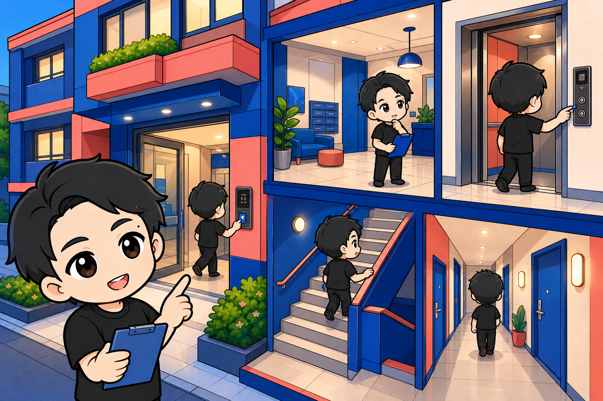
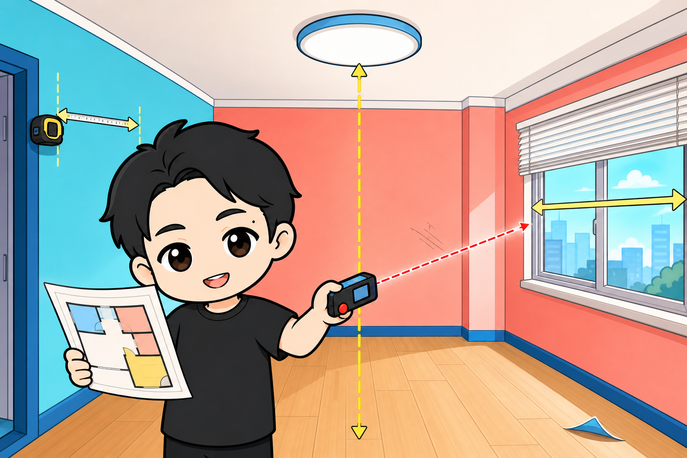
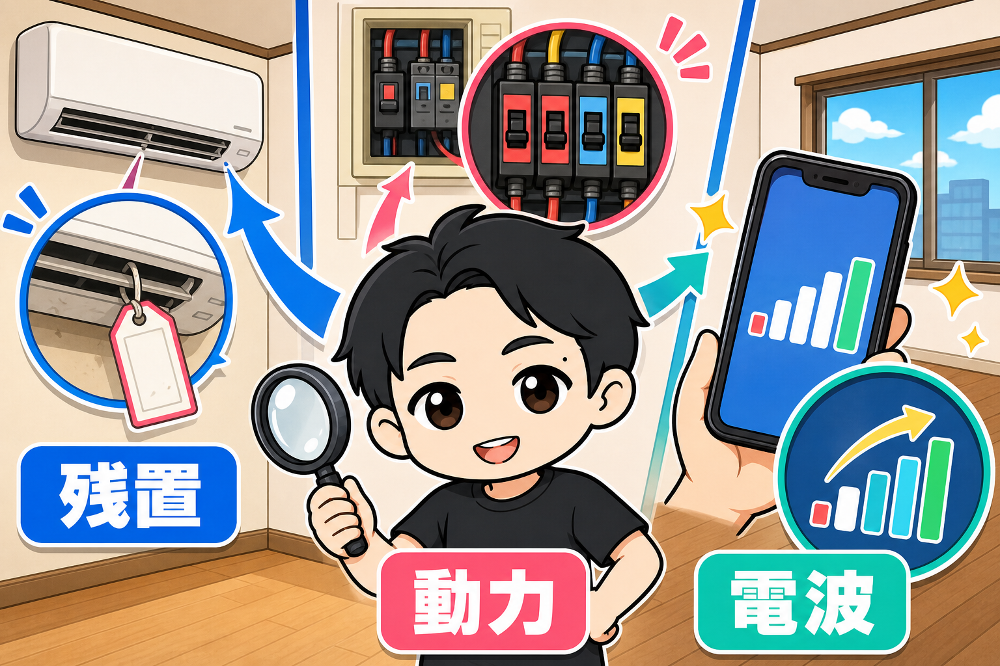
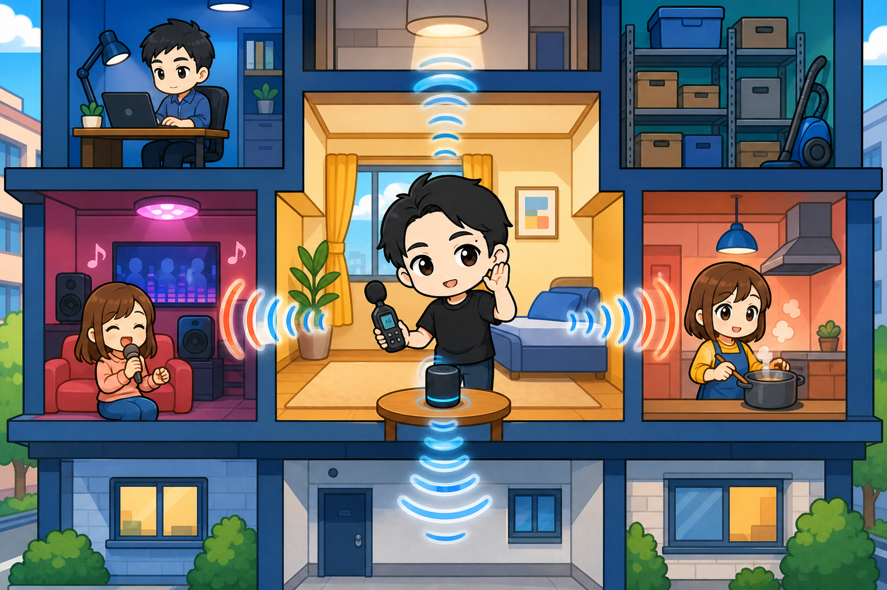
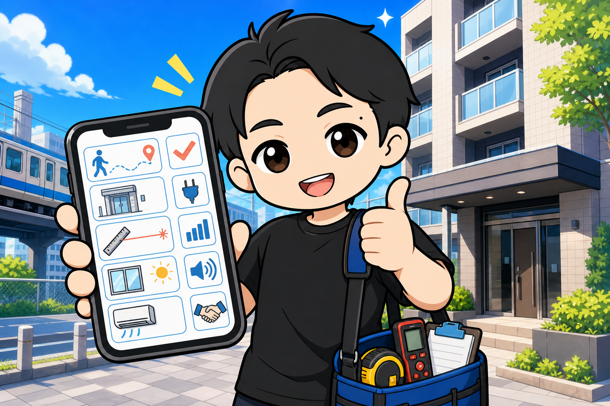

5年で23部屋のレンタルスペースを出店しました。
すべて自分でやりました。
物件の内見でぼくが見ているものを、ぜんぶ公開します。
チェックリストにして持っていってください。
駅から、必ず歩く
内見は駅から始まっています。
募集資料に「徒歩5分」と書いてあっても、実際に歩くとだいぶ遠く感じることがあります。
逆に、思ったより近いこともある。
だから必ず、タクシーを使わずに徒歩で行きます。
自分の足で、何分かかるかを確かめてください。
歩きながら、街の雰囲気も見ます。
貸会議室なら、ビジネスマンが多いか。
パーティースペースなら、人通りが多いか、若い人が中心か。
お客様になる人が、その道を歩いているかどうかです。
建物に着いたら

まず建物の全体を見ます。
住居が多いのか。築年数、建物の古さ。
入り方も確認します。
カードキーでエントランスを解錠してから部屋の鍵を開ける物件や、暗証番号で建物に入る物件もあります。
そうだからダメというわけではなく、無人運営の導線に関わるので、確認しておく。
エレベーターか、階段か。
古い物件だと、共用部に荷物が置かれていたり、使われ方が乱雑になっていることがあります。
そこはお客様が最初に通る場所です。
部屋に入ったら、まず「体感の広さ」

図面に35平米と書いてあっても、その数字にはトイレや流しのスペースが含まれています。
お客様が実際に使える部屋が、どれくらいの広さか。
これを自分の目で確かめます。
そしてメジャーやレーザー距離計で、壁の縦横と天井の高さを測る。
いけそうな物件なら、窓のサイズも測っておきます。
あとでカーテンやブラインドをつけることになるからです。
照明も見てください。
器具がついていない物件もあるためです。
同様に、壁や床もチェックします。
汚れ、カビ、破れ、剥がれの状態を見て、貼り替えが必要かどうかを確認します。
貼り替えが必要であれば、その分出店のコストも多くなります。
見落としがちな3つ

ここからは、慣れていないと見落とすところです。
① 残置(ざんち)かどうか。
エアコンや照明が「残置物」と言われたら、それはオーナーや管理会社の管理対象ではないという意味です。
故障したら、自分で修理・交換することになります。
設備なのか残置なのか、必ず確認してください。
とくに、エアコンは交換すると高額になりますので確認しておきます。
② 電気の種類。
電気には、家庭でも使う「電灯」と、「動力」の2種類があります。
業務用エアコンが入っている物件は、動力を使っていることが多い。
その場合、契約のときに動力も契約する必要があります。
不動産屋さんに確認してください。
③ 携帯の電波。
レンタルスペース向きの物件は、古い建物が多いです。
30年、40年前の建物は、スマホという概念がない時代に建てられています。
特に、地下は、圏外になることがあります。
無人運営は電波が生命線なので、自分のスマホで確認してください。
上下左右の部屋を確認する

隣、上、下の部屋がどんな用途かを確認します。
音の感じ方は人によって違うので、ぼくは自分で確かめたうえで、不動産屋さんにも聞いてもらいます。
ダンススタジオなら、特に下の階。
倉庫やカラオケ店なら大丈夫なことが多いですが、業種だけで安心しないでください。
実際に想定される状態を作って、音を確認する。
業種は目安、確認は実測です。
良さそうなら、その場で交渉
内見して「良さそうだな」と思ったら、そのまま交渉に入ります。
フリーレントをつけられないか。
敷金・礼金が多めなら、減らしてもらえないか。
気になる設備があれば「これって交換してもらえるものですか?」。
聞くのはタダです。
まとめ — スマホに入れて持っていく

- 駅から徒歩で実測(タクシー禁止)
- 街の雰囲気(お客様になる人が歩いているか)
- 建物の古さ・入り方・エレベーター・共用部
- 体感の広さ(図面の平米はトイレ込み)
- 採寸(壁・天井高・窓)
- 照明器具の有無
- 残置か設備か
- 電灯か動力か
- 携帯の電波
- 上下左右の用途と、音の実測
- 最後に交渉(フリーレント・敷礼・設備)
内見に行く前に、このリストをスマホに入れておいてください。
現地でスムーズに確認をすすめましょう。
▼もう1つの副業、AI社員だけのeBay輸出店の実録🐹
https://note.com/cham_ebay
▼ブログ(レンスペ×eBay、全記事まとめ)
https://rental-space.net